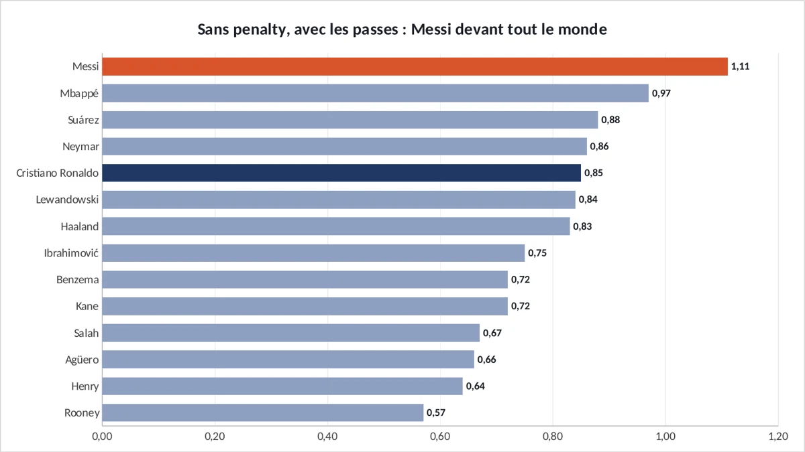

Ce que j’ai changé dans le calcul
J’ai retiré les penalties, ajouté les passes décisives et rapporté le total au nombre de matchs en club. J’ai aussi comparé les buts de Messi en Liga à ses buts attendus sur les saisons disponibles.
Pourquoi le classement bouge
Sur cette mesure, Messi arrive en tête des 14 joueurs. Le classement change parce que la comparaison tient aussi compte des buts qu’un joueur aide à marquer et du nombre de matchs disputés.

La question du temps de jeu
Le résultat dépend des joueurs retenus et de la mesure. Un match joué peut représenter dix minutes ou quatre-vingt-dix. Je referais la comparaison par 90 minutes pour voir si le classement tient.
Le dénominateur change la question
Les buts sur une carrière reflètent à la fois la fréquence à laquelle un joueur marque et le nombre de matchs qu’il a disputés. Rapportée aux apparitions, ma mesure se rapproche de sa contribution par match. Elle donne toutefois le même poids à un but et à une passe décisive, et compte de la même façon un match entier et une entrée en fin de rencontre.
Je ferais varier les règles du classement
Je comparerais les buts hors penalty seuls, puis les passes décisives seules, avant de refaire les calculs par 90 minutes. En gardant les 14 mêmes joueurs, je pourrais voir lesquels changent de rang. Je lirais à part la comparaison des buts de Messi et de ses buts attendus en Liga : elle renseigne sur sa finition dans un championnat et sur les saisons disponibles.
Ce que j’en retiens
Messi arrive en tête sur l’indicateur retenu. Avant de comparer deux profils pour une décision de recrutement, je préciserais le rôle recherché et je vérifierais si le résultat tient quand on change de mesure ou de période.